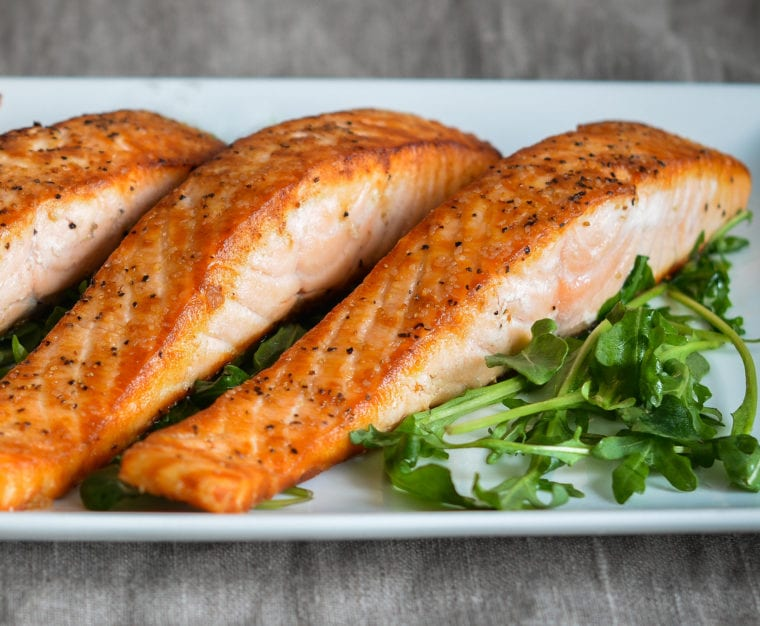

Pan Seared Salmon

Description
A delicious and quick pan seared salmon that you will enjoy any
time of the year. Easy to make and quick to satisfy!
Easily use fresh Salmon from the market or thaw the filets you dug
out from the bottom of the freezer. Either way you are going to love
this one!
Ingredients:
- Salmon filets
- Fresh Lemon
- Salt (to taste)
- Peppercorn, freshly ground (to taste)
- 1 tbs. Butter
Steps:
- Let Salmon rise to room temp. for 30 minutes
- Salt and Pepper Salmon filets
- Bring frying pan to searing tempature
- Melt butter in pan and place salmon filet in hot pan for 2 minutes per side.
- Garnish with fresh lemon and enjoy!